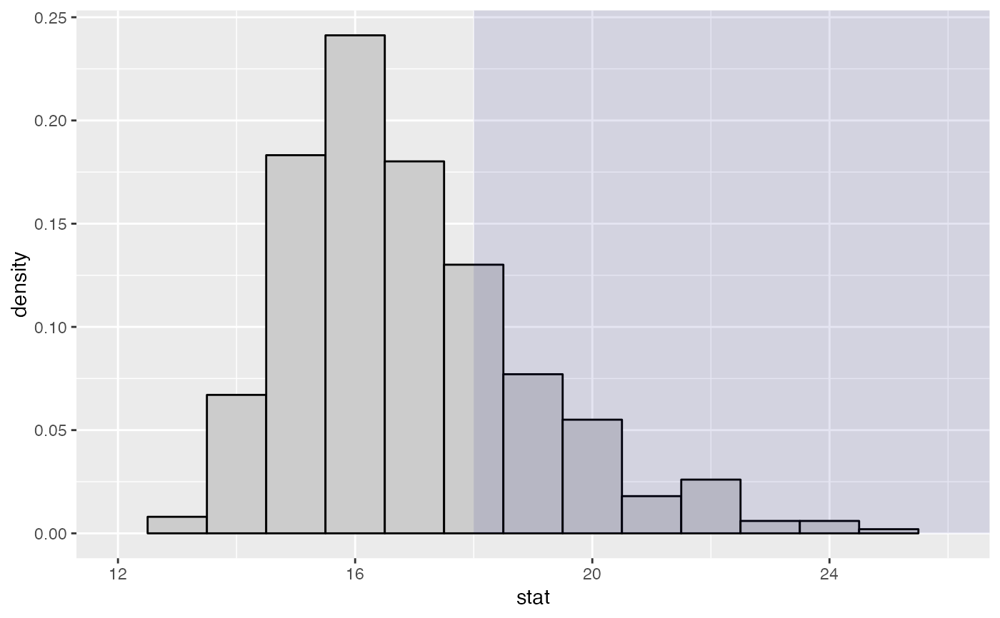
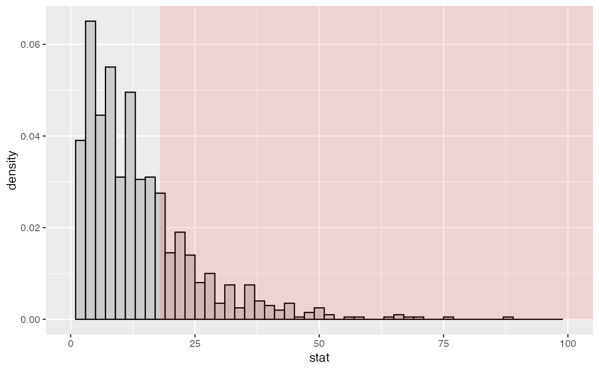
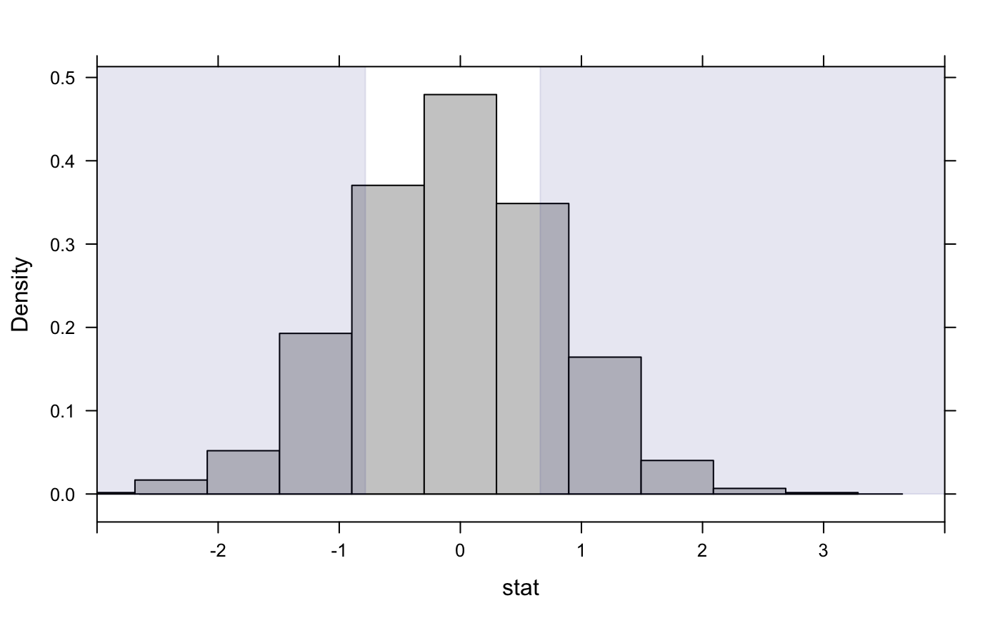

Tally test statistics from data and from multiple draws from a simulated null distribution
statTally(
sample,
rdata,
FUN,
direction = NULL,
alternative = c("default", "two.sided", "less", "greater"),
sig.level = 0.1,
system = c("gg", "lattice"),
shade = "navy",
alpha = 0.1,
binwidth = NULL,
bins = NULL,
fill = "gray80",
color = "black",
center = NULL,
stemplot = dim(rdata)[direction] < 201,
q = c(0.5, 0.9, 0.95, 0.99),
fun = function(x) x,
xlim,
quiet = FALSE,
...
)sample data
a matrix of randomly generated data under null hypothesis.
a function that computes the test statistic from a data set. The default value does nothing, making it easy to use this to tabulate precomputed statistics into a null distribution. See the examples.
1 or 2 indicating whether samples in rdata
are in rows (1) or columns (2).
one of default, two.sided, less, or greater
significance threshold for wilcox.test used to detect lack of symmetry
graphics system to use for the plot
a color to use for shading.
opacity of shading.
bin width for histogram.
number of bins for histogram.
fill color for histogram.
border color for histogram.
center of null distribution
indicates whether a stem plot should be displayed
quantiles of sampling distribution to display
same as FUN so you don't have to remember if it
should be capitalized
limits for the horizontal axis of the plot.
a logicial indicating whether the text output should be suppressed
additional arguments passed to lattice::histogram() or ggplot2::geom_histogram()
A lattice or ggplot showing the sampling distribution.
As side effects, information about the empirical sampling distribution and (optionally) a stem plot are printed to the screen.
# is my spinner fair?
x <- c(10, 18, 9, 15) # counts in four cells
rdata <- rmultinom(999, sum(x), prob = rep(.25, 4))
statTally(x, rdata, fun = max, binwidth = 1) # unusual test statistic
#>
#> Null distribution appears to be asymmetric. (p = 0.00144)
#>
#> Test statistic applied to sample data = 18
#>
#> Quantiles of test statistic applied to random data:
#> 50% 90% 95% 99%
#> 17 20 21 23
#>
#> Of the 1000 samples (1 original + 999 random),
#> 131 ( 13.1 % ) had test stats = 18
#> 321 ( 32.1 % ) had test stats >= 18

statTally(x, rdata, fun = var, shade = "red", binwidth = 2) # equivalent to chi-squared test
#>
#> Null distribution appears to be asymmetric. (p = 7.94e-06)
#>
#> Test statistic applied to sample data = 18
#>
#> Quantiles of test statistic applied to random data:
#> 50% 90% 95% 99%
#> 10.66667 28.00000 36.66667 51.33333
#>
#> Of the 1000 samples (1 original + 999 random),
#> 24 ( 2.4 % ) had test stats = 18
#> 261 ( 26.1 % ) had test stats >= 18

# Can also be used with test stats that are precomputed.
if (require(mosaicData)) {
D <- diffmean( age ~ sex, data = HELPrct); D
nullDist <- do(999) * diffmean( age ~ shuffle(sex), data = HELPrct)
statTally(D, nullDist)
statTally(D, nullDist, system = "lattice")
}
#> Using parallel package.
#> * Set seed with set.rseed().
#> * Disable this message with options(`mosaic:parallelMessage` = FALSE)
#>
#> Null distribution appears to be symmetric. (p = 0.894 )
#>
#> Test statistic applied to sample data = -0.7841
#>
#> Quantiles of test statistic applied to random data:
#> 50% 90% 95% 99%
#> -0.06220626 1.02679488 1.34615364 1.81014154
#>
#> Of the 1000 samples (1 original + 999 random),
#> 9 ( 0.9 % ) had test stats = -0.7841
#> 205 ( 20.5 % ) had test stats <= -0.7841
#> 194 ( 19.4 % ) had test stats >= 0.6597
#>
#> Null distribution appears to be symmetric. (p = 0.894 )
#>
#> Test statistic applied to sample data = -0.7841
#>
#> Quantiles of test statistic applied to random data:
#> 50% 90% 95% 99%
#> -0.06220626 1.02679488 1.34615364 1.81014154
#>
#> Of the 1000 samples (1 original + 999 random),
#> 9 ( 0.9 % ) had test stats = -0.7841
#> 205 ( 20.5 % ) had test stats <= -0.7841
#> 194 ( 19.4 % ) had test stats >= 0.6597
